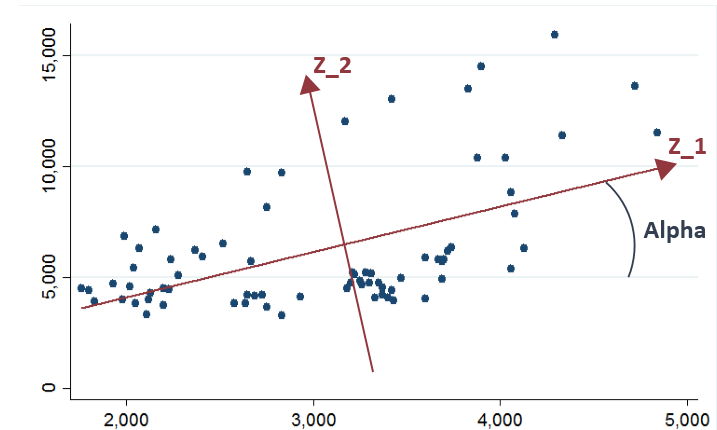
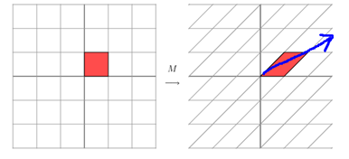

[MIGRATE] PCA主成分分析
Table of Contents
1 Introduction
主成分分析（Principal Components Analysis）是一种对特征进行降维的方法。由于观测指标间存在相关性，将导致信息的重叠与低效，我们倾向于用少量的、尽可能多能反映原特征的新特征来替代他们，主成分分析因此产生。主成分分析可以看成是高维空间通过旋转坐标系找到最佳投影(几何上)，生成新维度，其中新坐标轴每一个维度都是原维度的线性组合 \(\theta'X\) (数学上),满足：
- 新维度特征之间的相关性尽可能小
- 参数空间 \(\theta\) 有界
- 方差尽可能大，且每个主成分的方差递减
1.1 数学表示
对于样本 \(i \in N\) 有 \(p\) 维特征 \(X_{p \times 1}\) ，于是有$p$维主成分 \(Z_{p \times 1}\) ，以及参数 \(\theta_{p \times p}\) 满足：
\begin{equation} Z_{p \times 1} = \theta_{p \times p} X_{p \times 1} \end{equation}其中 \(Z_1 = Z[0]\) 便是样本 \(i\) 的第一主成分值，以此类推。 \(\theta\) 可以看做是对原坐标系的正交变换，参数估计方法后面会详细讨论。针对上述三点的性质，分别对应有：
- \(Cov(Z_i,Z_j)=0~~~i,j = 1,2, \cdots,p~and~i \neq j\)
- \(\sum_{i =1}^{p}{\theta_{ij}^2} = 1~~~j = 1,2,\cdots,p\)
- \(Var(Z_i) = max(Var(\theta_i X))\) and \(Var(Z_i)>Var(Z_j)\) if \(i \lt j\)
问题转换为，如何在满足以上性质下找到合适的 \(\theta\)
1.2 以二维特征为例

将原本二维空间以角 \(\alpha\) 旋转得到新坐标轴，此时在两轴上投影即主成分，我们可以写出此时 \(X\) 与 \(Z\) 的关系：
\begin{equation} \begin{cases} Z_1 = cos\alpha X_1 + sin\alpha X_2 \\ Z_2 = -sin\alpha X_1 + cos\alpha X_2 \end{cases} \end{equation}参数$θ$可以写成如下矩阵：
\begin{equation} \begin{bmatrix} cos\alpha & sin\alpha \\ -sin\alpha & cos\alpha \end{bmatrix} \end{equation}从上图可以看出，二维平面上点的波动大部分可以归结为$Z_1$的波动，小部分可以归结为$Z_2$的波动，这样一来，二维问题可以降维至一维，只看$Z_1$，因为其反应了大部分信息。
2 Eigenvalue and Eigenvector
2.1 矩阵乘法的几何意义
对于上述示例的向量$X=\begin{bmatrix} X_1 \\ X_2 \end{bmatrix}$，用参数矩阵$θ$左乘\(X\),即是对向量所在轴进行拉伸变换，而其对角线方向即变换的主要方向，这个方向就是变换后的$Z_1$轴，见下图，因此“如果我们想要描述好一个变换，那我们就描述好这个变换主要的变化方向就好了”。

2.2 特征矩阵与特征向量
如果说一个向量$v$是方阵$A$的特征向量，那么一定有：
\begin{equation} Av=\lambda v \end{equation}从这个公式可以看出，特征值所对应的特征向量描绘了此变换的方向，而特征值描绘了此变换的大小，或者说此变换方向对整体方向的贡献值。特征分解满足：
\begin{equation} A=Q\Sigma Q^{-1} \end{equation}其中A为方阵，Q为特征向量矩阵，每一列均为一个特征向量，$Σ$为特征值为对角元素的对角阵，与特征向量一一对应。特征值求法如下：
\begin{equation} |\lambda E - A|=0 \\\\ (\lambda E - A) v = 0 \end{equation}其中 \(\lambda\) 为特征值，带入下式后得到特征值对应的特征向量 \(v\),\(E\) 为单位阵。
2.3 特征值分解与主成分分析有什么关系？
由主成分性质，求第一主成分 \(Z_1 = \theta_1 X\) 的问题，即为求$θ_1$使得在 \(\theta_1 \theta_1'=1\) 下 \(Var(Z_1)\) 达到最大，其中 \(\theta_1\) 表示参数矩阵 \(\theta\) 的第一行，这是条件极值问题，用拉格朗日乘子法求解下式极值：
\begin{eqnarray} \phi(\theta_1) &=& Var(\theta_1 X)-\lambda ( \theta_1 \theta_1' - 1) \\ &=& \theta_1 \Sigma \theta_1' - \lambda ( \theta_1 \theta_1' - 1) \end{eqnarray}\(\Sigma\) 为随机向量$X$的协方差矩阵，对 \(\theta_1\) 求偏导后得到 \(2(\Sigma - \lambda E)\theta_1 = 0\) ,由于 \(\theta_1 \neq 0\) ,所以转换为求 \(|\Sigma-\lambda E |=0\) ，即求 \(\Sigma\) 特征值和特征矩阵的问题。
2.4 主成分分析简单实例
设随机向量 \(X=(X_1,X_2,X_3)'\) 的协方差矩阵 \(\Sigma\) 如下，对 \(X\) 进行主成分分析：
\begin{equation} \begin{bmatrix} 1 & -2 & 0\\ -2 & 5 & 0 \\ 0 & 0 & 2 \end{bmatrix} \end{equation}求得 \(\Sigma\) 的特征值从大到小依次为 \(\lambda_1 = 3+\sqrt{8},\lambda_2 = 2,\lambda_3 = 3-\sqrt{8}\) ，相对应的单位正交( $θ θ' = E $ )特征向量为：
\begin{eqnarray} \nonumber \theta_1 &=& [0.383,-0.924,0.000] \\ \nonumber \theta_2 &= &[0.000,0.000,1.000] \\ \nonumber \theta_3 &= &[0.924,0.383,0.000] \end{eqnarray}因此，主成分为：
\begin{eqnarray} \nonumber Z_1 &=& 0.383 X_1-0.924 X_2 \\ \nonumber Z_2 &=& X_3 \\ \nonumber Z_3 &=& 0.924 X_1+0.383 X_2 \end{eqnarray}\(Z_1\) 对X的贡献率可达 \(\frac{3+\sqrt{8}}{3+\sqrt{8}+2+3-\sqrt{8}} = 72.8\%\) ，而$Z_2$的贡献率为25\%， \(Z_1,Z_2\) 的联合贡献率为 97.85\%，我们可以认为这两个变量以及反映了原变量绝大多数信息，从而实现从三维降到二维的过程。
2.5 高维数据下的特征值分解
在现实生活中，由于样本的高维特征（图像识别每一个像素点都是一个维度），将会导致协方差矩阵$Σ$非常大，计算机难以存储与计算，那如何针对高维数据做特征值分解呢，我们知道 \(\Sigma = X X'\) ，考虑替代矩阵 \(P = X' X\) ，如果有100个样本，10000个维度，那么 \(\Sigma\) 就是一个10000维方阵，而$P$只是一个100维方阵。我们做如下推导：
\begin{eqnarray} \nonumber Pv &=& \lambda v\\ \nonumber X'X v &=& \lambda v\\ \nonumber X X' X v &=& X \lambda v\\ \nonumber \Sigma (X v) &=& \lambda (X v) \nonumber \end{eqnarray}这样通过求$P$的特征值和特征向量，其特征值即 \(\Sigma\) 的特征值，其特征向量右乘随机向量 \(X\) 即为 \(\Sigma\) 的特征向量，从而完成高维数据的特征值分解（只能得到部分前几的主成分）。
3 Algorithm and python programme
3.1 计算机特征值分解算法
3.2 聊一聊python的科学计算环境
Python有着非常强大的科学计算库：
- numpy~~基础计算库，多维数组处理
- scipy~~基于numpy，用于数值计算等等，默认调用intel mkl（高度优化的数学库）
- pandas~~强大的数据框，基于numpy
- matplotlib~~绘图库,基于numpy,scipy
- sklearn~~机器学习库，有各种机器学习算法
如果你仅仅装了numpy，那么计算特征值效率极低，5000维要41秒，10000维溢出。但是如果装了numpy+mkl,那么5000维将缩短至0.28秒，10000维1.5秒。mkl包含了blas,~lapack这些效率极高的线性代数库，你也可以尝试配置ATLAS环境（matlab的矩阵运算环境）。 另外，有一些好用的高度集成的科学计算IDE ：Anaconda, ~Canopy
3.3 用python实现人脸识别
下面利用PCA提取如下三幅300*400像素的图片的主成分，由于每张图片有120000个维度，难以进行特征值分解，所以采用上述高维数据的特征分解法：

python代码如下：
# -*- coding: utf-8 -*- import numpy as np import scipy.linalg as linA # 为了激活线性代数库mkl from PIL import Image import os,glob def sim_distance(train,test): ''' 计算欧氏距离相似度 :param train: 二维训练集 :param test: 一维测试集 :return: 该测试集到每一个训练集的欧氏距离 ''' return [np.linalg.norm(i - test) for i in train] picture_path = os.getcwd()+'\\pictures\\' array_list = [] for name in glob.glob(picture_path+'*.jpg'): # 读取每张图片并生成灰度（0-255）的一维序列 1*120000 img = Image.open(name) # img_binary = img.convert('1') 二值化 img_grey = img.convert('L') # 灰度化 array_list.append(np.array(img_grey).reshape((1,120000))) mat = np.vstack((array_list)) # 将上述多个一维序列合并成矩阵 3*120000 P = np.dot(mat,mat.transpose()) # 计算P v,d = np.linalg.eig(P) # 计算P的特征值和特征向量 d= np.dot(mat.transpose(),d) # 计算Sigma的特征向量 12000 * 3 train = np.dot(d.transpose(),mat.transpose()) # 计算训练集的主成分值 3*3 # 开始测试 test_pic = np.array(Image.open('c.jpg').convert('L')).reshape((1,120000)) result = sim_distance(train.transpose(),np.dot(test_pic,d)) print result test_pic = np.array(Image.open('e.jpg').convert('L')).reshape((1,120000)) result = sim_distance(train.transpose(),np.dot(test_pic,d)) print result
计算得到前三特征值为：
\begin{equation} \lambda = [412.789,-236.239,-69.550] \end{equation}对应的特征矩阵 \(\theta_{120000 \times 3}\) 为：
\begin{eqnarray} \nonumber X_{120000 \times 3} \begin{bmatrix} -0.62439 & -0.74493 &0.23495 \\ -0.53146 & 0.18473 &-0.82669 \\ -0.57242 & 0.64105 &0.51125 \\ \end{bmatrix} \end{eqnarray}通过 \(\theta'X\) 得到三张图片在三个主轴上的值分别为：
\begin{equation} \nonumber X_1 = [ -3.7e09,~~ 4.3e08 ,~~ -1.5e08] \\ \nonumber X_2 = [ -4.9e09 ,~~ 8.2e08, ~~ -1.2e09] \\ \nonumber X_3 = [ -4.7e09 , ~~ 8.4e08 , ~~-5.8e07] \end{equation}利用如下图片进行识别测试，首先右乘 \(\theta'\) 得到各自在三个主轴上的值，然后计算出该图片到训练样本中的三张图片的欧式距离：
显然，根据计算结果，我们认为左图更像人一点~~O(∩_∩)O，一个简单的利用PCA进行图像识别的小程序就此完成，当然这个非常粗糙，但对于理解PCA有着较大的帮助。